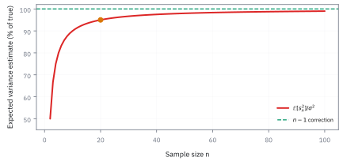
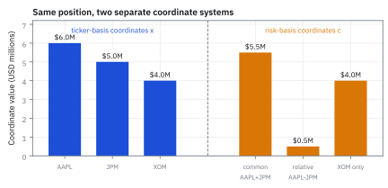

3.3 Estimators, Bias, and Standard Error
ตัวเลขที่คำนวณจากข้อมูลเปลี่ยนไปทุกครั้งที่ได้ข้อมูลชุดใหม่ หน้านี้วัดว่าวิธีคำนวณหนึ่งเยื้องเป้าแค่ไหน (bias) และแกว่งแค่ไหน (standard error)
ทีมของคุณกำลังเขียนโปรแกรมจัดพอร์ต คือโปรแกรมที่ตัดสินว่าจะแบ่งเงินลงหุ้นแต่ละตัวเท่าไร โปรแกรมนี้ต้องการตัวเลขสองตัวของหุ้นทุกตัว ตัวแรกคือ drift หรือผลตอบแทนเฉลี่ยต่อปีที่หุ้นมีแนวโน้มจะให้ ตัวที่สองคือความผันผวนต่อปี ซึ่งวัดว่าผลตอบแทนแกว่งขึ้นลงรอบค่าเฉลี่ยแค่ไหน (วัดเป็น SD หรือ standard deviation ของผลตอบแทน)
ทีมคำนวณสองตัวเลขนี้จากราคาปิดรายวันย้อนหลังหนึ่งปีของหุ้นตัวหนึ่ง ได้ผลดังนี้
- จำนวนวันในข้อมูล $n=252$ วัน เพราะตลาดหุ้นสหรัฐฯ เปิดทำการราว 252 วันต่อปี คือ 365 วัน หักเสาร์อาทิตย์ 104 วัน และวันหยุดตลาดราว 9 วัน
- drift ที่คำนวณได้ $\hat\mu=8\%$ ต่อปี
- ความผันผวนที่คำนวณได้ $\hat\sigma=20\%$ ต่อปี
หมวก ^ บนสัญลักษณ์แปลว่า “ค่าที่คำนวณจากข้อมูล” ไม่ใช่ค่าจริงของหุ้น แต่โปรแกรมกำลังจะรับสองตัวเลขนี้ไปใช้เหมือนเป็นค่าจริง
สมมติว่าเก็บข้อมูลอีกหนึ่งปีจากหุ้นตัวเดิม และหุ้นไม่เปลี่ยนนิสัยเลย ตัวเลขไหนจะเปลี่ยนมากกว่ากัน และเปลี่ยนมากแค่ไหน
ลองตอบก่อนเปิดเฉลย
drift เปลี่ยนมากกว่ามาก ขนาดที่ค่าประมาณแกว่งได้เมื่อเก็บข้อมูลใหม่เรียกว่า standard error (SE) หน้านี้จะพิสูจน์สูตร SE ของทั้งสองตัวให้ดูทีละขั้น ตอนนี้ขอใช้ผลไปก่อน โดย $T=1$ คือความยาวข้อมูลเป็นปี $n=252$ คือจำนวนวัน และใช้ $\sigma=20\%$ ที่คำนวณได้แทนค่าจริงที่เราไม่รู้
หน่วยของ SE ทั้งสองคือจุดเปอร์เซ็นต์ คือบวกลบในหน่วย % ตรง ๆ เช่น 8% ลบ 20 จุดได้ −12% drift แกว่งมากกว่าความผันผวนราว $20/0.89\approx22$ เท่า
ปีหน้า drift อาจออกมาเป็น −20% หรือ +35% ได้ง่าย ๆ เพราะห่างจาก 8% ไม่ถึงสองเท่าของ SE: $(8-(-20))/20=1.4$ และ $(35-8)/20=1.35$ ส่วนความผันผวนน่าจะอยู่ในช่วง $20\pm2\times0.89$ คือราว 18% ถึง 22%
ภาพรวมก่อนลงสูตร
ตัวเลข 8% ในโจทย์ไม่ได้ตกลงมาจากฟ้า มันเกิดจากวิธีคำนวณวิธีหนึ่ง ที่ใช้กับข้อมูลชุดหนึ่ง เช่น “บวกผลตอบแทนทุกวันเข้าด้วยกัน แล้วปรับให้เป็นต่อปี” วิธีคำนวณแบบนี้เรียกว่า estimator ส่วนตัวเลขที่ได้จากข้อมูลชุดหนึ่ง เช่น 8% เรียกว่า estimate
ถ้าได้ข้อมูลชุดใหม่ estimator ตัวเดิมจะให้ estimate ตัวใหม่ ตัวเลขตัวเดียวจึงบอกไม่ได้ว่าวิธีคำนวณดีหรือไม่ดี เราต้องนึกภาพว่าเก็บข้อมูลซ้ำหลาย ๆ ครั้ง คำนวณทุกครั้ง แล้วดูว่าตัวเลขทั้งหมดไปกองอยู่ตรงไหน
ลองนึกถึงการยิงเป้า กองรอยกระสุนมีสองเรื่องให้ดู เรื่องแรกคือศูนย์กลางของกองเยื้องจากเป้าแค่ไหน เรียกว่า bias ถ้า bias เป็นศูนย์ เรียกว่าวิธีนั้น “ไม่เบ้” (unbiased) เรื่องที่สองคือกองกระจายกว้างแค่ไหน เรียกว่า standard error หรือ SE สองเรื่องนี้แลกกันได้ ปืนที่เล็งเยื้องนิดหน่อยแต่กลุ่มกระสุนแน่น อาจโดนใกล้เป้ากว่าปืนที่เล็งตรงแต่กระสุนกระจายไปทั่ว
หน้านี้ไปทีละเรื่อง เริ่มจาก bias ที่เกิดจากวิธีเก็บข้อมูล ต่อด้วยเหตุผลที่ sample variance (variance ที่คำนวณจากข้อมูล) ต้องหารด้วย $n-1$ ไม่ใช่ $n$ แล้วรวม bias กับ SE เป็นตัวเลขเดียว สุดท้ายกลับมาตอบคำถามเปิดเรื่อง: ทำไมข้อมูลถี่ขึ้นช่วยประมาณความผันผวน แต่ไม่ช่วยประมาณ drift และทำไมการดึงค่าประมาณ drift เข้าหาศูนย์จึงช่วยได้
รูป — สองวิธีประมาณค่าเฉลี่ย: กว้างตรงเป้ากับแคบเยื้องเป้า
ศัพท์ที่ใช้ในหน้านี้
- Drift
- ผลตอบแทนเฉลี่ยต่อปีที่ราคาหุ้นมีแนวโน้มจะไหลไป เช่น drift 8% แปลว่าโดยเฉลี่ยราคาโตปีละราว 8%
- Estimator / estimate
- estimator คือวิธีคำนวณที่ใช้กับข้อมูล เช่น “บวกทุกตัวแล้วหารด้วยจำนวนตัว” estimate คือตัวเลขที่ได้เมื่อใช้วิธีนั้นกับข้อมูลชุดหนึ่ง เช่น 8% ที่แยกสองคำนี้เพราะคุณภาพเป็นเรื่องของวิธีคำนวณ ไม่ใช่ของตัวเลขตัวเดียว
- Bias
- นึกภาพว่าเก็บข้อมูลซ้ำหลายครั้งแล้วคำนวณทุกครั้ง bias คือค่าเฉลี่ยของตัวเลขทั้งหมดนั้น ลบด้วยค่าจริง มันบอกว่าวิธีคำนวณเยื้องเป้าไปทางเดียวกันเป็นนิสัยแค่ไหน ถ้า bias เป็นศูนย์ เรียกว่าวิธีนั้น “ไม่เบ้”
- Standard error (SE)
- SD ของตัวเลขชุดเดียวกันนั้น บอกว่าแต่ละครั้งแกว่งห่างจากกันแค่ไหน อย่าสับสนกับ SD ของข้อมูลแต่ละตัว เช่น SD ของผลตอบแทนรายปี
- MSE และ RMSE
- MSE (mean squared error) คือค่าเฉลี่ยของ (ค่าที่ประมาณได้ ลบ ค่าจริง) ยกกำลังสอง มันนับทั้ง bias และการแกว่งไว้ในตัวเลขเดียว RMSE คือรากที่สองของ MSE จึงกลับมามีหน่วยเดียวกับสิ่งที่ประมาณ
- Degrees of freedom
- จำนวนตัวเลขที่ยังเลือกได้อิสระหลังถูกบังคับด้วยเงื่อนไข เช่น ส่วนเหลือสามตัวต้องรวมกันได้ศูนย์ รู้สองตัวก็รู้ตัวที่สาม จึงอิสระแค่สองตัว ใช้อธิบายตัวหาร $n-1$
- i.i.d.
- ข้อมูลแต่ละตัวสุ่มมาอย่างอิสระจากกัน และมาจากการแจกแจงเดียวกัน (independent and identically distributed)
- Delta method
- วิธีประมาณว่า ถ้า $\hat\theta$ แกว่ง แล้ว $g(\hat\theta)$ จะแกว่งเท่าไร คำตอบคือความชัน $g'$ คูณการแกว่งของ $\hat\theta$ หน้านี้ใช้แปลง SE ของ variance เป็น SE ของความผันผวน ซึ่งคือรากของ variance
- Shrinkage
- การดึงค่าประมาณเข้าหาค่าอ้างอิง เช่นศูนย์หรือค่าเฉลี่ยของกลุ่ม ยอมให้เยื้องเป้าเพิ่ม เพื่อแลกกับการแกว่งที่น้อยลง
สัญลักษณ์และหน่วย
| สัญลักษณ์ | ความหมาย | หน่วย |
|---|---|---|
| $\theta,\ \hat\theta$ | ค่าจริงที่อยากรู้ และตัวประมาณของมัน | ตามปริมาณนั้น |
| $b$ | bias $\mathbb E[\hat\theta]-\theta$ | หน่วยเดียวกับ $\theta$ |
| $s^2,\ s$ | sample variance ที่หารด้วย $n-1$ และรากของมัน | หน่วยกำลังสอง, หน่วยเดิม |
| $s_n^2$ | variance ที่หารด้วย $n$ แทน $n-1$ | หน่วยกำลังสอง |
| $K,\ R$ | จำนวนลูกของครอบครัวที่สุ่มแบบทุกครอบครัวมีโอกาสเท่ากัน และขนาดครอบครัวที่ได้จากการสุ่มเด็ก | คน |
| $T,\ n,\ \Delta t$ | ระยะเวลาสังเกตรวม จำนวนงวด และความยาวงวด $T/n$ | ปี, งวด, ปี |
| $\mu,\ \sigma$ | drift และความผันผวนรายปีของ log return | ต่อปี, ต่อรากที่สองของปี |
| $V$ | variance ของค่าประมาณ drift $\hat\mu$ | จุดเปอร์เซ็นต์ยกกำลังสอง |
| $w$ | น้ำหนักที่คูณค่าประมาณเพื่อหดเข้าหาศูนย์ | ไม่มีหน่วย |
ขั้นที่ 1 — แยกวิธีคำนวณออกจากตัวเลข แล้ววัดสองอย่าง
ก่อนจะวัดอะไร ต้องตั้งชื่อของให้ชัด ให้ $\theta$ (อ่านว่า theta) เป็นค่าจริงที่อยากรู้ เช่น drift จริงของหุ้น ค่านี้คงที่ แต่เรามองไม่เห็น ให้ $\hat\theta$ เป็น estimator คือตัวเลขที่ได้จากวิธีคำนวณกับข้อมูล $\hat\theta$ เป็นตัวแปรสุ่ม เพราะข้อมูลที่ได้มาขึ้นกับความบังเอิญ เก็บใหม่ก็ได้ค่าใหม่
เราอยากรู้สองเรื่อง เรื่องแรกคือศูนย์กลางของ $\hat\theta$ ตรงเป้าไหม เรื่องที่สองคือ $\hat\theta$ กระจายกว้างแค่ไหน สูตรข้างล่างให้ชื่อและตัวเลขกับสองเรื่องนี้
สองค่านี้เป็นสมบัติของวิธีคำนวณ ไม่ใช่ของตัวเลข 8% ตัวเดียว $\mathbb E[\hat\theta]$ คือค่าเฉลี่ยของ $\hat\theta$ เมื่อนึกภาพว่าเก็บข้อมูลซ้ำนับไม่ถ้วนครั้ง ส่วน $\operatorname{Var}(\hat\theta)$ คือ variance ของตัวเลขชุดเดียวกันนั้น SE จึงเป็น SD ของค่าประมาณ ไม่ใช่ SD ของข้อมูล
ตัวอย่างที่เรารู้จักแล้วคือค่าเฉลี่ยตัวอย่าง $\bar X$ (บวกข้อมูล $n$ ตัวแล้วหารด้วย $n$) หน้า กฎจำนวนมาก หาไว้ว่า $\mathbb E[\bar X]$ เท่ากับค่าเฉลี่ยจริง bias จึงเป็นศูนย์ และ $\operatorname{SE}(\bar X)=\sigma/\sqrt n$ โดย $\sigma$ คือ SD ของข้อมูลแต่ละตัว
bias มีสองแบบที่ต้องแยกให้ออก แบบแรกหายเองเมื่อข้อมูลมากขึ้น เช่นการหาร variance ด้วย $n$ ซึ่งจะเห็นข้างล่าง แบบที่สองเกิดจากวิธีเก็บข้อมูล หรือจากการตั้งเป้าผิด แบบนี้ไม่หายเลย ต่อให้เก็บข้อมูลล้านแถว
ขั้นที่ 2 — bias จากวิธีเก็บข้อมูล: สุ่มเด็กไม่เท่ากับสุ่มครอบครัว
ขั้นนี้ดู bias แบบที่สอง ซึ่งข้อมูลมากแค่ไหนก็แก้ไม่ได้ ตัวอย่างที่เห็นภาพง่ายที่สุดไม่ใช่เรื่องหุ้น แต่เป็นเรื่องการสำรวจครอบครัว
โจทย์ให้อะไรมาบ้าง: นักสำรวจอยากรู้ว่าครอบครัวที่มีลูก มีลูกเฉลี่ยกี่คน แต่ไปเคาะประตูทุกบ้านไม่ไหว จึงไปถามเด็กที่โรงเรียนแทน วิธีคือสุ่มเด็กมาหนึ่งคน ถามว่ามีพี่น้องกี่คน แล้วบวกหนึ่ง (นับตัวเด็กเอง) ก็ได้ขนาดครอบครัวของเด็กคนนั้น สมมติว่าในเมืองนี้
- ครอบครัว 50% มีลูก 1 คน
- ครอบครัว 30% มีลูก 2 คน
- ครอบครัว 20% มีลูก 4 คน
ให้ $K$ เป็นจำนวนลูกของครอบครัวที่สุ่มแบบทุกครอบครัวมีโอกาสเท่ากัน และ $p_k$ เป็นสัดส่วนครอบครัวที่มีลูก $k$ คน ($p_1=0.5$, $p_2=0.3$, $p_4=0.2$) ค่าที่อยากรู้คือ $\mathbb E[K]$ ส่วน $R$ คือขนาดครอบครัวที่ได้จากการสุ่มเด็ก
จุดสำคัญคือ ครอบครัวที่มีลูก $k$ คน มีเด็กให้สุ่มเจอ $k$ คน โอกาสที่การสุ่มเด็กจะไปเจอครอบครัวแบบนี้จึงแปรตาม $k\,p_k$ ไม่ใช่ $p_k$ จากนั้นหารด้วยผลรวม $\sum_j j\,p_j$ เพื่อให้โอกาสทุกแบบรวมกันได้ 1 แล้วจึงหาค่าเฉลี่ยของ $R$
คำตอบ: การสุ่มเด็กให้ค่าเฉลี่ยราว 2.58 คน ทั้งที่ค่าจริงคือ 1.9 คน สูงไป $2.579/1.9\approx1.36$ เท่า หรือ 36% เหตุผลอยู่ที่ $\Pr(R=k)$ ครอบครัวลูกสี่คนมีเด็กให้สุ่มเจอสี่คน จึงถูกนับหนักกว่าครอบครัวลูกคนเดียวสี่เท่า ค่าที่ได้จึงเป็นค่าเฉลี่ยที่ถ่วงด้วย $k$ คือ $\mathbb E[K^2]/\mathbb E[K]$ เช่น โอกาสเจอครอบครัวลูกสี่คนคือ $4(0.2)/1.9\approx0.42$ ทั้งที่ครอบครัวแบบนี้มีแค่ 20%
ส่วนเกินในแถวสุดท้ายได้จากการรวมเศษส่วน $\frac{\mathbb E[K^2]}{\mathbb E[K]}-\mathbb E[K]=\frac{\mathbb E[K^2]-\mathbb E[K]^2}{\mathbb E[K]}$ ซึ่งตัวเศษก็คือ $\operatorname{Var}(K)$ สูตรนี้ไม่มีจำนวนเด็กที่สุ่มอยู่เลย สุ่มเด็กหนึ่งล้านคน ค่าเฉลี่ยก็ยังเข้าหา 2.58 ไม่ใช่ 1.9 bias แบบนี้เรียกว่า size-biased sampling คือของที่ใหญ่กว่ามีโอกาสถูกเลือกมากกว่า
ปัญหาเดียวกันเกิดกับการรายงานผลตอบแทนกองทุน สมมติกองทุนหนึ่งมีประวัติสองปี
- ปีแรก มีเงินในกองทุน \$1 ล้าน ได้ผลตอบแทน +20%
- ปีที่สอง นักลงทุนเห็นผลงานดีจึงแห่ใส่เงินเพิ่ม จนกองทุนมีเงิน \$10 ล้าน แล้วปีนั้นได้ −10%
วิธีแรกเฉลี่ยตามเวลา ให้แต่ละปีมีน้ำหนักเท่ากัน ได้ $\bar r_{\text{time}}$ วิธีที่สองนับเป็นดอลลาร์ ให้ $G$ เป็นกำไรของทั้งสองปีรวมกัน หน่วยล้านดอลลาร์ แล้วหารด้วยเงินที่ลงไว้ในกองทุน ปีแรก \$1 ล้าน บวกปีที่สอง \$10 ล้าน เป็น $1+10=11$ ล้าน ได้ $\bar r_{\text{dollar}}$
วิธีแรกได้ 5% ซึ่งกองทุนชอบรายงาน วิธีที่สองได้ −7.27% ซึ่งคือสิ่งที่เงินของนักลงทุนโดยรวมได้รับจริง เพราะเงินส่วนใหญ่เข้ามาตอนปีที่ขาดทุน สองวิธีนี้ไม่มีวิธีไหนผิด แต่ตอบคนละคำถาม ก่อนเลือก estimator ต้องถามก่อนว่าอยากรู้อะไร
รูป — สุ่มครอบครัวกับสุ่มเด็กเห็นครอบครัวใหญ่ไม่เท่ากัน
ขั้นที่ 3 — ทำไม sample variance หารด้วย n − 1
ขั้นนี้ดู bias แบบแรก ซึ่งหายเองเมื่อข้อมูลมาก variance คือ “ค่าเฉลี่ยของระยะห่างกำลังสองจากค่าเฉลี่ย” จึงน่าจะหารด้วย $n$ แต่สูตร sample variance ในตำราหารด้วย $n-1$ ทำไม? ลองกับตัวเลขเล็ก ๆ ก่อน
โจทย์ให้อะไรมาบ้าง: ผลตอบแทนสามงวด (ตัวเลขสมมติ) $x_1=1\%$, $x_2=3\%$, $x_3=8\%$ จำนวนข้อมูลคือ $n=3$ ค่าเฉลี่ยตัวอย่างคือ $\bar x=(1+3+8)/3=12/3=4\%$ ตารางข้างล่างเอาแต่ละงวดลบค่าเฉลี่ย แล้วยกกำลังสอง ตัวเลขในคอลัมน์กลางมีหน่วยเป็นจุดเปอร์เซ็นต์ คอลัมน์ขวาเป็นจุดเปอร์เซ็นต์ยกกำลังสอง
| ผลตอบแทน | ลบค่าเฉลี่ย 4% | กำลังสอง |
|---|---|---|
| 1% | −3 | 9 |
| 3% | −1 | 1 |
| 8% | +4 | 16 |
| รวม | 0 | 26 |
ปัญหาคือ variance จริงวัดระยะห่างจากค่าเฉลี่ยจริง $\mu$ แต่เราไม่รู้ $\mu$ จึงวัดจาก $\bar x$ แทน ลองดูว่าผลรวมกำลังสองเปลี่ยนอย่างไร เมื่อวัดจากจุดอ้างอิง $c$ ใด ๆ แล้วลอง $c=6$ เป็นค่าเฉลี่ยจริงสมมติ สุดท้ายเทียบตัวหารสองแบบ $s_n^2$ หารด้วย $n$ และ $s^2$ หารด้วย $n-1$
คำตอบ: sample variance คือ $s^2=13$ หน่วยเป็นจุดเปอร์เซ็นต์ยกกำลังสอง ถ้าเขียนเป็นทศนิยม 1 จุดเปอร์เซ็นต์คือ 0.01 จึงได้ $13\times0.01^2=0.0013$ SD คือรากของมัน $s=\sqrt{0.0013}\approx0.03606$ หรือ 3.606% ซึ่งเท่ากับ $\sqrt{13}\approx3.606$ จุดเปอร์เซ็นต์ ไม่ใช่ 13%
ทำไมหารด้วย 2 ไม่ใช่ 3 คำตอบอยู่ในแถวแรกของสูตร พจน์ $n(\bar x-c)^2$ ไม่มีวันติดลบ ผลรวมกำลังสองรอบจุด $c$ จึงต่ำที่สุดเมื่อ $c=\bar x$ พอดี เราวัดรอบ $\bar x$ เพราะไม่รู้ $\mu$ ผลรวมที่ได้จึงต่ำกว่าผลรวมรอบ $\mu$ เสมอ ถ้าค่าเฉลี่ยจริงคือ 6% ผลรวมรอบค่าจริงคือ 38 แต่รอบ $\bar x$ ได้แค่ 26 การหารด้วยตัวเลขที่เล็กลง ($n-1$ แทน $n$) ชดเชยส่วนที่หายไปนี้
มองอีกมุมหนึ่ง ส่วนเหลือ $x_i-\bar x$ ทั้งสามตัวต้องรวมกันได้ศูนย์ ถ้ารู้สองตัวแรก ($-3$ และ $-1$) ตัวที่สามถูกบังคับให้เป็น $+4$ ทันที ส่วนเหลือจึงขยับได้อิสระแค่สองตัว จำนวนนี้เรียกว่า degrees of freedom คือ $n-1=2$
ตรวจเองใน 10 วินาที: แถวแรกของสูตรมาจากการแยก $x_i-c=(x_i-\bar x)+(\bar x-c)$ แล้วยกกำลังสองและบวกทุกตัว พจน์ไขว้หายไป เพราะส่วนเหลือรวมกันได้ศูนย์
รูป — ผลรวมกำลังสองต่ำสุดที่ค่าเฉลี่ยตัวอย่าง
ขั้นที่ 4 — พิสูจน์ตัวหาร n − 1 สำหรับทุกขนาดตัวอย่าง
รูปพาราโบลาบอกว่าผลรวมรอบ $\bar X$ ต่ำเกินในข้อมูลชุดเดียว ขั้นนี้ถามต่อว่า ถ้าเก็บข้อมูลซ้ำหลายครั้ง มันต่ำเกินโดยเฉลี่ยเท่าไร และต้องตอบให้ได้กับทุกขนาดข้อมูล $n$ ตัวพิมพ์ใหญ่ $X_i$ หมายถึงข้อมูลที่ยังสุ่มอยู่ ต่างจาก $x_i$ ในขั้นก่อน ซึ่งเป็นตัวเลขที่ได้มาแล้ว
เครื่องมือมีสองชิ้น ชิ้นแรกคือเอกลักษณ์พาราโบลาเดิม โดยแทน $c=\mu$ แล้วย้ายข้าง ชิ้นที่สองคือ $\bar X$ มีค่าเฉลี่ย $\mu$ และ variance $\sigma^2/n$ ข้อนี้จริงเมื่อข้อมูลเป็น i.i.d. (แต่ละตัวสุ่มอย่างอิสระจากการแจกแจงเดียวกัน) และ variance ไม่เป็นอนันต์
ผลรวมรอบ $\bar X$ หายไปโดยเฉลี่ยหนึ่ง $\sigma^2$ เต็ม ๆ เหตุผลคือ $\bar X$ ถูกคำนวณจากข้อมูลชุดเดียวกัน มันจึงขยับตามข้อมูลเข้าไปใกล้ข้อมูลเสมอ และ “ดูด” การแกว่งไปส่วนหนึ่ง
จังหวะที่ต้องคิดคือการหาค่าเฉลี่ยของผลรวมกำลังสอง พจน์ $\sum_i(X_i-\mu)^2$ มี $n$ ตัว แต่ละตัวมีค่าเฉลี่ย $\mathbb E[(X_i-\mu)^2]=\sigma^2$ ตามนิยามของ variance จึงได้ $n\sigma^2$ พจน์ที่ลบออกมีค่าเฉลี่ย $n\,\mathbb E[(\bar X-\mu)^2]=n\operatorname{Var}(\bar X)=n\cdot\sigma^2/n=\sigma^2$ เหลือ $(n-1)\sigma^2$ การหารด้วย $n-1$ จึงทำให้ค่าเฉลี่ยตรงเป้าพอดี การแก้นี้เรียกว่า Bessel’s correction
สิ่งที่ใช้คือความอิสระของข้อมูล ไม่ได้สมมติว่าข้อมูลเป็น normal ถ้าข้อมูลสัมพันธ์กัน $\operatorname{Var}(\bar X)$ จะไม่ใช่ $\sigma^2/n$ อีก ถ้าหารด้วย $n$ แทน ค่าเฉลี่ยจะเป็น $(n-1)\sigma^2/n$ ที่ $n=20$ ได้ $19/20=0.95$ คือต่ำไป 5% โดยเฉลี่ย ไม่ใช่ต่ำไป 5% ทุกชุดข้อมูล และเมื่อ $n$ โต $(n-1)/n$ เข้าหา 1 bias นี้จึงหายไปเอง
รูป — ตัวหาร n ทำให้ variance ต่ำไปเท่าไรโดยเฉลี่ย

ขั้นที่ 5 — รวม bias กับ SE เป็นความคลาดเดียว
ตอนนี้วิธีคำนวณพลาดได้สองแบบ คือเยื้องเป้า (bias) กับแกว่ง (SE) ถ้าต้องเลือกระหว่างวิธีที่ไม่เบ้แต่แกว่งมาก กับวิธีที่เบ้นิดหน่อยแต่นิ่ง ต้องมีตัวเลขเดียวที่นับทั้งสองอย่าง ตัวเลขที่ใช้กันคือ MSE (mean squared error) คือค่าเฉลี่ยของความคลาดกำลังสอง $(\hat\theta-\theta)^2$
ให้ $b=\mathbb E[\hat\theta]-\theta$ คือ bias แล้วแยกความคลาดเป็นสองส่วน ส่วนแรกแกว่งแบบสุ่มรอบศูนย์กลางของ $\hat\theta$ ส่วนที่สองคือการเยื้องที่คงที่
ความคลาดกำลังสองเฉลี่ยแยกเป็น variance บวก bias กำลังสองพอดี เหมือนทฤษฎีบทพีทาโกรัส ที่ด้านตั้งฉากสองด้านประกอบกันเป็นด้านตรงข้ามมุมฉาก
จังหวะที่ต้องคิดคือพจน์ไขว้ เมื่อยกแถวแรกกำลังสองจะมี $2b(\hat\theta-\mathbb E[\hat\theta])$ เพิ่มมา $b$ เป็นค่าคงที่ ส่วน $\hat\theta-\mathbb E[\hat\theta]$ มีค่าเฉลี่ยเป็นศูนย์ตามนิยาม พจน์ไขว้จึงหายไปเมื่อหาค่าเฉลี่ย RMSE คือรากของ MSE ทำให้กลับมามีหน่วยเดียวกับ $\theta$
ลองกับตัวเลข วิธี A ไม่เบ้และมี SE 4 จึงได้ $\operatorname{MSE}=4^2+0^2=16$ วิธี B มี bias 2 และ SE 2 จึงได้ $\operatorname{MSE}=2^2+2^2=8$ วิธี B คลาดน้อยกว่าทั้งที่เบ้ นี่คือเหตุผลทั้งหมดของการหดค่าประมาณท้ายหน้า แต่ MSE เป็นเกณฑ์หนึ่งเท่านั้น ถ้างานต้องเอาค่าประมาณของหลายกองทุนมาเฉลี่ยกัน การแกว่งของแต่ละกองจะหักล้างกันเอง แต่ bias ไปทางเดียวกันจะสะสม ความไม่เบ้จึงอาจสำคัญกว่า
ขั้นที่ 6 — เก็บถี่ขึ้นไม่ช่วย drift แต่ช่วยความผันผวน
กลับมาที่คำถามเปิดเรื่อง ข้อมูลรายวันหนึ่งปีบอก drift ได้แม่นแค่ไหน ใช้แบบจำลองที่ง่ายที่สุดก่อน
- ราคาที่ปลายงวดที่ $i$ คือ $P_i$ ผลตอบแทนแต่ละงวดวัดเป็น log return $r_i=\ln P_i-\ln P_{i-1}$ ซึ่งใกล้กับผลตอบแทนเป็นทศนิยมเมื่อราคาขยับไม่มาก เช่น ราคาขึ้น 1% ได้ $\ln(1.01)\approx0.00995$
- $r_i$ ของแต่ละงวดเป็นอิสระกัน และ drift $\mu$ กับความผันผวน $\sigma$ (ต่อปีทั้งคู่) คงที่
- ข้อมูลยาว $T$ ปี แบ่งเป็น $n$ งวด งวดละ $\Delta t=T/n$ ปี เช่นข้อมูลรายวันหนึ่งปีมี $\Delta t=1/252$
งวดที่ยาว $\Delta t$ ปี มีค่าเฉลี่ย $\mathbb E[r_i]=\mu\Delta t$ และ $\operatorname{Var}(r_i)=\sigma^2\Delta t$ เหตุผลคือชิ้นเวลาที่อิสระกัน บวกกันได้ทั้งค่าเฉลี่ยและ variance ทั้งสองจึงโตตามความยาวเวลา ตัวประมาณ drift ต่อปีคือผลรวม log return ทั้งหมด หารด้วยจำนวนปี
ค่าประมาณ drift ขึ้นกับราคาวันแรกกับวันสุดท้ายเท่านั้น เมื่อบวก $r_i$ ทุกงวด ราคาระหว่างทางหักล้างกันหมด เช่น $\ln P_1$ ที่บวกเข้ามาในงวดแรก ถูกลบออกในงวดที่สอง ผลรวมแบบนี้เรียกว่า telescoping sum การซอยปีเดียวกันเป็นรายวันหรือรายนาทีจึงไม่ได้ข้อมูลเรื่อง drift เพิ่มเลย
ในแถว variance เหตุผลเดียวกันปรากฏเป็น $n\Delta t=T$ จำนวนงวด $n$ หายไปจากสูตร เหลือแต่ความยาวเวลาจริง $T$ ที่ $\sigma=20\%$ และ $T=1$ ได้ $\operatorname{SE}=20/\sqrt1=20$ จุด ช่วงที่ drift จริงน่าจะอยู่ประมาณ 95 ครั้งใน 100 คือค่าประมาณบวกลบ 1.96 SE (1.96 คือระยะ นับเป็นจำนวน SD ที่ครอบ 95% ของรูประฆัง normal) ได้ $1.96\times20=39.2$ ช่วงจึงเป็น $8-39.2=-31.2\%$ ถึง $8+39.2=47.2\%$ หน้า confidence interval จะอธิบายความหมายของ 95% ให้ละเอียด
ถึงจะเก็บข้อมูลห้าปี SE ก็ยังเป็น $20/\sqrt5\approx8.94$ จุด ผลนี้กระทบงานจริงตรง ๆ โปรแกรมจัดพอร์ตแบบ Markowitz portfolio ต้องการ mean vector คือรายการผลตอบแทนคาดหวังของสินทรัพย์ทุกตัว ถ้าประมาณจากข้อมูลรายเดือน 60 เดือน (ห้าปี) แต่ละตัวยังคลาดได้ราว 8.94 จุด น้ำหนักที่โปรแกรมเลือกจึงไม่นิ่ง
รูป — SE ของ drift กับ SE ของความผันผวน
ขั้นที่ 7 — Delta method: แปลงความไม่แน่นอนของ variance เป็นของความผันผวน
ความผันผวนต่างจาก drift มันไม่ได้ขึ้นกับจุดปลายสองจุด แต่ขึ้นกับทุกการแกว่งระหว่างทาง ข้อมูลยิ่งถี่ ยิ่งเห็นการแกว่งมาก ขั้นนี้หาว่า SE ของความผันผวนเล็กลงเร็วแค่ไหนเมื่อ $n$ โต
ทำเป็นสองจังหวะ จังหวะแรกหา SE ของ variance $s^2$ ซึ่งเป็นค่าเฉลี่ยของ $(r_i-\bar r)^2$ จำนวน $n$ ตัว จังหวะที่สองแปลงเป็น SE ของ $s=\sqrt{s^2}$ ผ่านความชันของฟังก์ชันราก $g(v)=\sqrt v$ วิธีนี้เรียกว่า delta method ขั้นนี้สมมติเพิ่มว่าผลตอบแทนแต่ละงวดมีการแจกแจง normal และเขียน $X$ แทนผลตอบแทนหนึ่งงวด
คำตอบคือ SE ของความผันผวนเท่ากับตัวความผันผวนเอง หารด้วย $\sqrt{2n}$ โดย $n$ คือจำนวนงวด ไม่ใช่จำนวนปี นี่คือเหตุผลที่ข้อมูลถี่ขึ้นช่วยความผันผวน แต่ไม่ช่วย drift
จังหวะแรกต้องใช้ moment ที่สี่ $\mathbb E[(X-\mu)^4]$ ซึ่งวัดว่าหางของการแจกแจงหนาแค่ไหน สำหรับ normal มาตรฐาน $Z$ การอินทิเกรตทีละส่วนให้ $\mathbb E[Z^4]=3\,\mathbb E[Z^2]=3$ เมื่อ $X=\mu+\sigma Z$ จึงได้ $3\sigma^4$ พอเฉลี่ย $n$ ตัวที่อิสระกัน variance ก็หารด้วย $n$
จังหวะที่สองคือ delta method ถ้า variance ขยับเล็กน้อย $\Delta v$ ค่า SD จะขยับราว $g'(\sigma^2)\Delta v$ ตามความชัน การแกว่งของ $s$ จึงราว ๆ เท่ากับการแกว่งของ $s^2$ คูณความชัน ส่วน variance ของ $s$ ต้องคูณด้วยความชันกำลังสอง
ตัวเลขในคำถามเปิดเรื่องมาจากตรงนี้ ข้อมูลรายวันมีความผันผวนรายวัน $\sigma/\sqrt{252}$ เพราะ variance โตตามเวลา SE รายวันจึงเป็น $\frac{\sigma/\sqrt{252}}{\sqrt{2n}}$ พอคูณ $\sqrt{252}$ กลับเป็นต่อปี ตัว $\sqrt{252}$ ก็ตัดกันหมด เหลือ $\sigma/\sqrt{2n}$ สูตรจึงใช้ $\sigma=20\%$ ต่อปีได้ตรง ๆ ได้ $20/\sqrt{2\times252}=20/\sqrt{504}\approx0.891$ จุด
ข้อจำกัดใหญ่คือ moment ที่สี่ ผลตอบแทนรายวันจริงมีหางหนา คือวันที่ราคากระโดดแรงเกิดบ่อยกว่าที่ normal ทำนาย ถ้า $\mathbb E[(X-\mu)^4]=6\sigma^4$ แทน $3\sigma^4$ ทุกแถวจะเปลี่ยนตาม
SE จึงโตจาก 0.891 เป็นราว 1.41 จุด ถ้า moment ที่สี่เป็นอนันต์ สูตรนี้ใช้ไม่ได้เลย ข้อมูลระดับนาทียังมีปัญหาอีกข้อคือ microstructure noise คือราคาที่บันทึกเด้งไปมาระหว่างราคาเสนอซื้อกับราคาเสนอขาย โดยมูลค่าจริงไม่ได้เปลี่ยน หน้า realized volatility จัดการเรื่องนี้โดยเฉพาะ
ขั้นที่ 8 — หดค่าประมาณ drift เข้าหาศูนย์: ยอมเบ้เพื่อให้นิ่ง
drift มี SE 20 จุด ใหญ่กว่าตัว drift 8% เสียอีก ค่าประมาณจึงแกว่งจนเชื่อถือไม่ได้ ความคิดของขั้นนี้คือยอมให้เบ้ เพื่อแลกกับการแกว่งที่น้อยลง ลองวิธีใหม่ $\tilde\mu=w\hat\mu$ โดย $0\le w\le1$ คือเอาค่าประมาณเดิมคูณน้ำหนัก $w$ เพื่อดึงเข้าหาศูนย์ ($w=1$ คือไม่หดเลย $w=0$ คือตอบศูนย์ตลอด)
ให้ $\hat\mu$ ไม่เบ้และมี variance $V$ วิธีใหม่จึงมี
- bias $\mathbb E[w\hat\mu]-\mu=w\mu-\mu=(w-1)\mu$
- variance $\operatorname{Var}(w\hat\mu)=w^2V$ เพราะการคูณด้วยค่าคงที่ $w$ ทำให้ variance คูณด้วย $w^2$
ใส่สองค่านี้ลงสูตร MSE จากขั้นรวม bias กับ SE แล้วหา $w$ ที่ทำให้ MSE ต่ำที่สุด โดยตั้งอนุพันธ์ให้เท่ากับศูนย์
$w^*$ บอกว่ายิ่ง noise ใหญ่เมื่อเทียบกับสัญญาณ ยิ่งควรหดมาก ในสูตร $\mu^2$ คือขนาดของสัญญาณ (drift จริงกำลังสอง) และ $V$ คือขนาดของ noise ถ้า $V$ เล็กมาก $w^*$ เข้าหา 1 และแทบไม่ต้องหด อนุพันธ์อันดับสองคือ $2(V+\mu^2)\gt0$ จุดนี้จึงเป็นจุดต่ำสุด ไม่ใช่สูงสุด แถว $\operatorname{MSE}(w^*)$ ได้จากการแทน $w^*$ กลับลงใน $\operatorname{MSE}(w)$ แล้วจัดรูป
ตัวเลขเป็นโลกสมมติที่รู้ว่า drift จริงคือ 8 จุด และ $V=20^2=400$ เพราะ SE จากข้อมูลหนึ่งปีคือ 20 จุด RMSE ลดจาก $\sqrt{400}=20$ ของวิธีไม่หด เหลือ 7.43 ส่วนค่าประมาณ 8% ในคำถามเปิดเรื่อง ถูกหดเหลือ $0.138\times8\%\approx1.10\%$
จุดอ่อนสำคัญคือ $w^*$ ใช้ค่าจริง $\mu$ ซึ่งเราไม่รู้ จึงเรียกว่า oracle weight คือน้ำหนักที่ต้องมีคนบอกคำตอบให้ก่อน มันบอกว่าการหดดีได้แค่ไหนในอุดมคติ ถ้าแทน $\hat\mu$ ลงไปแทน $\mu$ จะไม่ได้ MSE เท่าเดิม งานจริงจึงเลือกเป้าและน้ำหนักจากข้อมูลอย่างมีหลักการ เช่น หดค่าประมาณของทุกสินทรัพย์เข้าหาค่าเฉลี่ยของกลุ่ม (แนวคิด James–Stein) หด covariance matrix (Ledoit–Wolf) หรือผสมมุมมองของนักวิเคราะห์กับค่าอ้างอิงจากตลาดแบบ Black–Litterman
รูป — MSE ตามน้ำหนักการหดเมื่อรู้ค่าจริง

ความผิดที่ทำให้ตัวเลขดูน่าเชื่อแต่ผิด
ใช้ SD ของข้อมูลแทน SE: สองตัวเลขนี้ตอบคนละคำถาม SD บอกว่าผลตอบแทนปีหน้าจะแกว่งแค่ไหน SE บอกว่าค่าเฉลี่ยที่เราประมาณได้คลาดจากค่าจริงแค่ไหน หุ้นที่มี SD ต่อปี $\sigma=20\%$ และมีข้อมูล $T=5$ ปี ถ้าบอกว่า “drift ที่ประมาณได้คลาดได้ ±20 จุด” คือใช้ตัวเลขผิดตัว ตัวที่ถูกคือ $\operatorname{SE}=\sigma/\sqrt T=20/\sqrt5\approx8.94$ จุด
คิดว่า $s$ ไม่เบ้เพราะ $s^2$ ไม่เบ้: การถอดรากทำให้ค่าเฉลี่ยต่ำลง ตัวอย่างง่าย ๆ ถ้า $s^2$ ออกมาเป็น 0 หรือ 2 ด้วยโอกาสเท่ากัน ค่าเฉลี่ยของ $s^2$ คือ 1 และรากของมันคือ 1 แต่ค่าเฉลี่ยของรากคือ $(\sqrt0+\sqrt2)/2\approx0.707$ ซึ่งต่ำกว่า 1 ข้อมูล normal สองตัว ($n=2$) ให้ผลแบบเดียวกัน
แถวแรกมาจาก $\bar X=(X_1+X_2)/2$ ส่วนเหลือสองตัวคือ $\pm(X_1-X_2)/2$ ผลรวมกำลังสองคือ $(X_1-X_2)^2/2$ แล้วหารด้วย $n-1=1$ แถวสองใช้ว่า $X_1-X_2$ เป็น normal ที่มี variance $2\sigma^2$ โดย $Z$ คือ normal มาตรฐานและ $\phi$ คือ density ของมัน ความเชื่อว่า $\mathbb E[s]=\sigma$ จึงผิด ค่าจริงต่ำไปราว 20% bias นี้ลดลงเมื่อ $n$ โต แต่ไม่หายที่ $n$ เล็ก
หวังว่าข้อมูลมากจะแก้ bias จากวิธีเก็บ: ข้อมูลเพิ่มลดได้แค่การแกว่ง ไม่ได้ย้ายศูนย์กลาง การสุ่มเด็กเข้าหา $\mathbb E[K^2]/\mathbb E[K]=4.9/1.9\approx2.58$ ไม่ใช่ $\mathbb E[K]=1.9$ ไม่ว่าจะสุ่มกี่คน ในการเงินมีกับดักเดียวกันชื่อ survivorship bias กองทุนที่ขาดทุนหนักมักปิดตัว แล้วหายไปจากฐานข้อมูล ค่าเฉลี่ยของกองทุนที่ยังเหลือจึงสูงเกินจริง ไม่ว่าฐานข้อมูลจะมีกี่กอง ปัญหาใกล้เคียงกันคือการเลือกเฉพาะผลที่ดูดีจากการลองหลายแบบ ดู ปัญหาการทดสอบหลายครั้ง
สับสนเปอร์เซ็นต์กับจุดเปอร์เซ็นต์: SE 0.891 “จุดเปอร์เซ็นต์” ของความผันผวน 20% แปลว่าบวกลบในหน่วย % ตรง ๆ ช่วงหนึ่ง SE คือ $20\pm0.891$ หรือราว 19.1% ถึง 20.9% ถ้าอ่านผิดเป็น 0.891% ของ 20% จะได้แค่ $0.00891\times20\approx0.18$ จุด ช่วงแคบลงห้าเท่าโดยไม่มีเหตุผล
ใช้ทำอะไรบนโต๊ะจริง
โต๊ะจัดพอร์ตใช้ optimizer แบบ mean-variance คือโปรแกรมที่เลือกน้ำหนักเงินในแต่ละสินทรัพย์ ให้ได้ผลตอบแทนสูงที่สุดเมื่อเทียบกับความเสี่ยง มันเชื่อค่าประมาณที่ใส่เข้าไปทุกตัว ความคลาดของ drift จึงร้ายแรงกว่าที่เห็น ลองดูตัวอย่างสมมติ
- สินทรัพย์สองตัวเหมือนกันทุกอย่าง drift จริงตัวละ 8% ความผันผวนตัวละ $\sigma=20\%$ และไม่สัมพันธ์กัน (correlation เป็นศูนย์)
- ค่าประมาณ drift ออกมาเป็น 10% กับ 6% ซึ่งเฉลี่ยแล้ว $(10+6)/2=8$ จึงไม่เบ้
สำหรับสินทรัพย์ที่ไม่สัมพันธ์กัน น้ำหนักแบบ mean-variance แปรตาม $\mu/\sigma^2$ (ดูที่มาใน Markowitz portfolio) ทั้งสองตัวมี $\sigma$ เท่ากัน น้ำหนักจึงแปรตาม drift ที่ประมาณได้ ให้ $w_1,\ w_2$ เป็นสัดส่วนเงินในสินทรัพย์ตัวที่หนึ่งและสอง (คนละตัวกับ $w$ ของการหด) $\hat R_p$ เป็นผลตอบแทนพอร์ตที่ optimizer คิดว่าจะได้ และ $R_p$ เป็นผลตอบแทนที่ได้จริง
optimizer “สัญญา” 8.5% แต่ได้จริงแค่ 8% เท่ากับพอร์ต 50/50 ส่วนความผันผวนของพอร์ตแย่ลง เมื่อสินทรัพย์ไม่สัมพันธ์กัน variance ของพอร์ตคือ $\sum_i w_i^2\sigma^2$ ความผันผวนจึงเป็น $\sigma\sqrt{\sum_i w_i^2}$
สรุปคือ optimizer ได้ผลตอบแทนจริงเท่าเดิม แต่รับความเสี่ยงมากขึ้น เพราะมันทุ่มน้ำหนักให้สินทรัพย์ที่บังเอิญถูกประมาณสูงเกินเสมอ คนในวงการจึงเรียก mean-variance optimizer ว่า “error maximizer” ทางแก้ที่ใช้กันคือ รายงาน SE คู่กับค่าประมาณทุกตัว หดค่าประมาณ drift แบบในขั้นหดค่าประมาณ และจำกัดน้ำหนักหรือ leverage (การกู้เงินมาลงทุนเพิ่ม)
โจทย์ตรวจความเข้าใจ
1. ทีมมีสองวิธีประมาณ drift ของหุ้นตัวหนึ่ง (หน่วยเป็นจุดเปอร์เซ็นต์) วิธี A ไม่เบ้และมี SE 4 วิธี B มี bias 2 และมี SE 2 ถ้าตัดสินด้วย MSE ควรใช้วิธีไหน และ RMSE ของแต่ละวิธีคือเท่าไร
เฉลย
ใช้ $\operatorname{MSE}=\operatorname{SE}^2+b^2$ แล้วถอดรากเป็น RMSE
จึงเลือก B ความไม่เบ้ไม่ใช่เกณฑ์เดียว วิธีที่เบ้นิดหน่อยแต่นิ่งกว่ามาก คลาดน้อยกว่าโดยรวม
2. นักวิเคราะห์มีข้อมูลผลตอบแทน i.i.d. $n=20$ ค่า เขาคำนวณ variance ด้วยฟังก์ชัน VAR.P ใน Excel ซึ่งหารด้วย $n$ แทนที่จะใช้ VAR.S ซึ่งหารด้วย $n-1$ เขาจะได้ variance ต่ำไป 5% ในทุกชุดข้อมูลหรือไม่
เฉลย
ไม่ใช่ ให้ $s_n^2$ คือ variance ที่หารด้วย $n$ จากขั้นพิสูจน์ตัวหาร $n-1$ เราได้ว่า
ตัวเลข 0.95 เป็นค่าเฉลี่ยข้ามการเก็บข้อมูลซ้ำ ข้อมูลชุดหนึ่งอาจได้ค่าสูงกว่าหรือต่ำกว่าจริงมากก็ได้ ส่วนต่างนี้หดเองเมื่อข้อมูลมากขึ้น ที่ $n=100$ ได้ $99/100=0.99$ คือต่ำไปแค่ 1%
3. อีกเมืองหนึ่งทำสำรวจแบบเดียวกับตัวอย่างสุ่มเด็ก ในครอบครัวที่มีลูก ครึ่งหนึ่งมีลูก 1 คน อีกครึ่งมีลูก 3 คน ถ้าสุ่มเด็กแล้วถามขนาดครอบครัว ค่าเฉลี่ยที่ได้คือเท่าไร และ bias เท่าไร
เฉลย
การสุ่มเด็กให้ค่าเฉลี่ย 2.5 คน และ bias คือ 0.5 คน ตรวจด้วยสูตรส่วนเกิน $\operatorname{Var}(K)/\mathbb E[K]=(5-2^2)/2=0.5$ ตรงกัน ถ้าทุกครอบครัวมีลูกเท่ากัน $\operatorname{Var}(K)=0$ และ bias หายไป
คำนวณซ้ำด้วย JavaScript
เปิดดูโค้ด
// Sample variance of three returns, in percentage points.
const x = [1, 3, 8];
const mean = x.reduce((a, b) => a + b, 0) / x.length;
const ssAround = c => x.reduce((s, v) => s + (v - c) ** 2, 0);
// Size-biased sampling: pick a child, report the family size.
const fam = [[1, 0.5], [2, 0.3], [4, 0.2]];
const EK = fam.reduce((s, [k, p]) => s + p * k, 0);
const EK2 = fam.reduce((s, [k, p]) => s + p * k * k, 0);
// Oracle shrinkage of a drift estimate: true mean 8, variance 400 (points squared).
const trueMu = 8, V = 400, w = trueMu ** 2 / (trueMu ** 2 + V);
const mse = w * w * V + (1 - w) ** 2 * trueMu ** 2;
// Two identical assets, estimates 10% and 6%, weights proportional to mu / sigma^2.
const est = [10, 6], wts = est.map(m => m / (est[0] + est[1]));
const result = {
mean, ssAroundMean: ssAround(mean), ssAroundSix: ssAround(6),
varianceN: ssAround(mean) / 3, varianceN1: ssAround(mean) / 2,
sdDecimal: Math.sqrt(ssAround(mean) / 2 / 10000),
familyTrue: EK, familyReported: EK2 / EK, familyBias: (EK2 - EK * EK) / EK,
fundTimeAverage: (20 - 10) / 2, fundDollarWeighted: (0.2 * 1 - 0.1 * 10) / 11,
driftSE1y: 20 / Math.sqrt(1), driftSE5y: 20 / Math.sqrt(5),
volSEdaily: 20 / Math.sqrt(2 * 252), volSEminute: 20 / Math.sqrt(2 * 252 * 390),
volSEfatTails: 20 * Math.sqrt(5 / (4 * 252)),
w, mse, rmse: Math.sqrt(mse), shrunk: w * 8,
mvoWeights: wts, promised: wts[0] * est[0] + wts[1] * est[1],
volEqual: 20 * Math.sqrt(0.5), volTilted: 20 * Math.sqrt(wts[0] ** 2 + wts[1] ** 2),
biasOfSdN2: Math.sqrt(2 / Math.PI)
};
console.log(JSON.stringify(result, null, 1));โค้ดนี้คำนวณตัวเลขหลักของหน้านี้ซ้ำทั้งหมด รันใน Node หรือคอนโซลของเบราว์เซอร์แล้วเทียบ ควรได้ varianceN1 13, ssAroundSix 38, familyReported ราว 2.579, volSEdaily ราว 0.891, rmse ราว 7.43 และ promised 8.5
สิ่งที่ควรตอบได้หลังอ่าน
- bias วัดว่าวิธีคำนวณเยื้องเป้าแค่ไหน SE วัดว่าแกว่งแค่ไหน ทั้งคู่เป็นสมบัติของวิธีคำนวณ ไม่ใช่ของตัวเลขตัวเดียว และความคลาดรวมแยกได้เป็น $\operatorname{MSE}=\operatorname{Var}(\hat\theta)+b^2$
- bias จากวิธีเก็บข้อมูลไม่หายเมื่อเก็บข้อมูลมากขึ้น เช่น การสุ่มเด็กให้ 2.58 แทน 1.9 เสมอ
- ผลรวมกำลังสองรอบ $\bar x$ ต่ำเกินโดยเฉลี่ยหนึ่ง $\sigma^2$ จึงต้องหารด้วย $n-1$
- SE ของ drift คือ $\sigma/\sqrt T$ ขึ้นกับจำนวนปีเท่านั้น SE ของความผันผวนคือราว $\sigma/\sqrt{2n}$ ขึ้นกับจำนวนงวด ข้อมูลถี่ขึ้นจึงช่วยแค่ความผันผวน
- การหด drift เข้าหาศูนย์ลด RMSE จาก 20 เหลือ 7.43 ในโลกที่รู้ค่าจริง งานจริงต้องเลือกเป้าและน้ำหนักจากข้อมูลอย่างมีหลักการ
รู้ SE แล้ว ขั้นต่อไปคือรายงานมันให้คนอื่นเข้าใจถูก หน้า confidence interval จะแปลง SE เป็นช่วงของค่าที่ข้อมูลยังแยกออกจากกันไม่ได้ และอธิบายว่าคำว่า 95% หมายถึงอะไรกันแน่